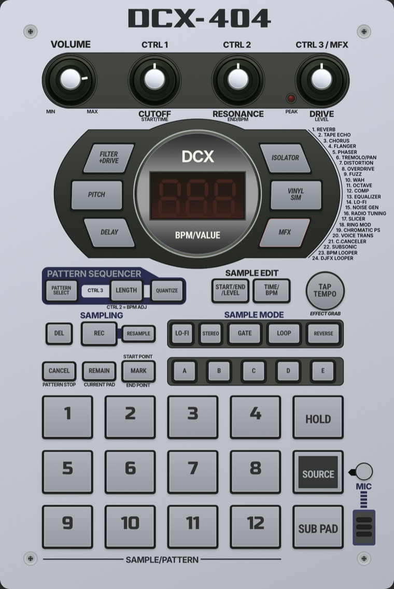

Guia da marca
Máquinas de áudio clássicas que abrem no navegador, de graça e com código aberto, feitas em Duque de Caxias, RJ. Este guia diz como a marca fala, que cor tem, de que é feita e como cada peça se comporta.
- Versão
- 0.2 · 09/11/2026
- Tokens
- tokens.css
- Materiais
- textures.css
- Peças
- components.css
- Referência
- DCX-404 face nova
- Direção
- capa de cassete
Princípios
Cinco regras que decidem os casos que o guia não cobre.
- 01O objeto vem primeiroCada controle é uma peça com alojamento, borda e superfície, medida no painel real. Nada de enfeite que não exista num aparelho.
- 02Textura com motivoPapel, tinta, metal e borracha, cada um com a sua camada. Sem gradiente genérico, sem sombra padrão, sem ícone de biblioteca.
- 03Preto, marfim e pouco acentoPreto #1c1c1c e marfim fazem quase tudo. Rosa, vinho e vermelho vêm dos painéis e aparecem como luz ou tinta, não como fundo.
- 04Direto, de oficinaFrase curta, verbo de ação, sem exagero. "Inspirado em", nunca "igual a" ou "melhor que".
- 05Abre em um cliqueToda tela leva para tocar: botão grande, sem conta, sem instalação. Funciona em 375 px tão bem quanto no desktop.
Cores
Base preta e marfim; cinzas quentes interpolados entre os dois; acentos tirados das variáveis do Figma do 404 e do CSS dos painéis. O contraste de cada lasca é calculado na hora (WCAG 2.x) contra o preto e o marfim.
Proporção de uso
marfim 62 · preto 30 · acento 8Base
--dcx-preto · --dcx-branco--dcx-preto · #1c1c1cTexto, chassi, botão principal.--dcx-branco-marfim · #f2ecdcFundo principal da marca.--dcx-branco-papel · #ebe8dfManual, documentação longa.--dcx-branco-creme · #ebe0c8Cartão, caixa, embalagem.Cinzas quentes
--dcx-cinza-900 … 2001c1c1c
2b2a27
3b3935
5d5a53
7b776e
a29d92
c6c0b3
dbd5c8
Texto corrido sobre claro: no mínimo cinza-600 (5.8:1). Cinza-500 só em texto grande, fio e ícone. Sobre preto: cinza-400 para texto secundário.
Acentos dos painéis
do Figma do 404 e do CSS do RJ-2000--dcx-vinho · #76232bLink e ênfase sobre claro. Borda do elastômero aceso.--dcx-rosa · #ef7b80Tecla acesa. Texto só sobre preto.--dcx-vermelho-display · #f53925Segmento aceso e LED. Cor de luz, nunca de texto sobre claro.--dcx-marinho · #292c4dPlacas e legendas do painel. Anel de foco.--dcx-vinho-tinta · #5f262bTexto sobre tecla acesa.--dcx-cinza-painel · #929899Superfície do painel. Decoração sobre claro.--dcx-aluminio-1/2 · #d1d6e0 → #aeb1b8Face das máquinas. Só com .tx-metal.--dcx-vermelho-escuro · #b3261eErro e "evite". O único vermelho legível sobre claro.Tipografia
Helvetica na marca, na home e na documentação. Helvetica é proprietária: usamos a do sistema e, onde não existe, a TeX Gyre Heros (livre, mesmo desenho, GUST Font License), que vem embutida em fonts/ (400 e 700, ~29 KB). Nenhum arquivo da Helvetica é embutido.
Equipamentos clássicos, abertos no navegador.
5xl · 76/1.023xl · 49/1.02xl · 31/1.1md · 20/1.45base · 16/1.5xs · 12 caixa-alta- Título fecha−0.02em a partir de 25 px; peso 700.
- Rótulo abreCaixa-alta 12 px, +0.08em, como serigrafia de painel.
- Leitura16 px, entrelinha 1.5, no máximo 64 caracteres por linha.
- NúmerosMono tabular em especificação e tabela.
Marca e máquina não se misturam
Marca · Helvetica
Home, guia, documentação, cartão de compartilhamento, README.
DCX Audio
Máquina · fontes do hardware
O painel é um objeto: mantém Roboto Condensed, Inter e Russo One, embutidas (OFL). A marca não reveste o painel.

Texturas
Cada material é uma pilha de camadas físicas: cor de base, camada escura (fibra, mancha, sujeira) e camada clara (grão, estria de luz, poeira). Intensidade 1.0 em superfície de marca; 0.5 atrás de texto. Antes e depois de cada um em textures-demo.html.
.tx .tx-papel · fundo de página, manual..tx-cartao · capa, caixa, cartão de visita..tx-serigrafia + .tx-tinta · cartaz, faixa..tx-metal · placa, face de aparelho..tx-plastico · tecla de função..tx-desgaste .tx-poeira · somam sobre qualquer material.Tecla de elastômero
.tx-tecla · .down · .litAs peças e as cores da tecla do 404: alojamento #222321, borda #5a5d61, superfície #adb1b7 → #979ba2. Clique para pressionar; duplo clique acende.
Componentes
HTML e CSS puro, em components.css. Mesma física das peças do 404: solto tem degrau de 2 px e a sombra do alojamento; pressionado desce os 2 px e ganha a sombra moldada por dentro; aceso usa as cores da tecla acesa. Os estados abaixo estão forçados com .is-hover, .is-down e .is-focus para comparar lado a lado.
Botão
.dcx-btn · --claro · --link · --p- Altura48 px (40 no --p)
- Laterais24 px (16 no --p)
- Raio4 px · borda do elastômero
- Degrau2 px · desce ao pressionar
- Sombra0 2px 3px rgba(16,23,18,.2) · 404
- Pressionadoinset 0 2px 3px rgba(23,27,23,.5)
- Foco2 px marinho, folga 3 px
- TextoHelvetica 700 16 px, −0.01em
<!-- principal, claro, link, pequeno -->
<a class="dcx-btn" href="studio/">Abrir o DCX Studio</a>
<button class="dcx-btn dcx-btn--claro" type="button">Ver manuais</button>
<a class="dcx-btn dcx-btn--link" href="https://github.com/dcxaudio">Código</a>
<button class="dcx-btn dcx-btn--p" disabled>Abrir</button>Etiqueta
.dcx-etq · --marinho · --aceso · --teste · --preto · .dcx-etq-ledTinta impressa, não botão: não tem hover nem cursor. 22 px de altura, caixa-alta 12 px.
Cartão de máquina
.dcx-maquina · .is-breve · .dcx-maquina-foto--vaziaFolha de papel sobre a mesa: no hover sobe 2 px e a sombra alonga. A captura do painel fica numa janela rebaixada, com a sombra moldada do 404 por cima.
pendente
Cabeçalho
.dcx-cab · --escuroFio duplo de manual impresso embaixo (2 px, folga, 1 px). Página atual em negrito com fio de 2 px; hover com fio vinho de 1 px. No celular a navegação desce para uma segunda linha que rola sozinha; o cabeçalho do topo desta página é o mesmo componente.
Rodapé
.dcx-rodChassi preto com tinta de serigrafia, os quatro parafusos do 404 nos cantos (desenho e cores do parafuso-cabeca.svg e parafuso-assento.svg) e a linha de pé do painel: fio, legenda, fio. É o rodapé do fim desta página.
Bloco de código
.dcx-cod · --num · .dcx-cod-linhaGrafite quente do visor apagado, texto marfim em mono 14 px, sem textura. Rola na horizontal dentro do bloco. Copiar acende o LED por 1,6 s. Na linha do texto: --tex-intensity: .5.
<link rel="stylesheet" href="design-system/tokens.css"><link rel="stylesheet" href="design-system/textures.css"><link rel="stylesheet" href="design-system/components.css"><!-- fundo de página: papel leve, porque tem texto por cima --><body class="tx tx-papel" style="--tex-intensity: .5">Tabela
.dcx-tab · .dcx-tab-rolo · .numFicha técnica de manual: cabeçalho caixa-alta com fio preto de 2 px, linhas com fio cinza-300, números em mono à direita. Sem textura. No celular rola dentro da moldura e mostra sombra só do lado que tem mais conteúdo.
| Máquina | Tipo | Inspirado em | Versão | Estado |
|---|---|---|---|---|
| RJ-2000 | Sampler e sequenciador | SP-1200 | — | No ar |
| DCX 404 | Sampler de performance | SP-404 | b0.3 | Em teste |
| RJ-950 | Sampler de rack | S950 | — | No ar |
| RJ-42 | Looper | — | — | No ar |
| RJ-1202 | Mixer | 1202 | — | Em obra |
| Exemplo de layout: versões e estados ilustrativos, conferir antes de publicar. Nomes de terceiros só como "inspirado em". | ||||
Uso da logo
Três versões e o selo. A logo sempre em uma cor só: preto sobre claro, marfim sobre preto. Arquivos em Images/logos/ (brancos; recolorir só para preto #1c1c1c ou marfim).
Área livre e tamanho mínimo
x = altura das letrasEm volta da logo, nada (texto, borda, outra marca) entra numa faixa de x, a altura das letras. Em cabeçalho estreito, o mínimo é x/2.
O selo
.dcx-selo · s = altura do seloO selo é o único ponto quente da capa: uma etiqueta de fita inclinada, em acento #e2463f, com um compasso de bateria em meio-tom marfim (bumbo, chimbal, caixa, chimbal). Desenho nosso, gerado por fonte/gerar-selo.py. Proporção fixa 3:2.
Ao lado da logo: folga de 0,4 s entre os dois; logo com 0,62 s de altura; área livre de s/4 em volta do conjunto. Sozinho, também s/4 de área livre.
O que não fazer
Tom de voz
Direto, de oficina, sem exagero. Fala com beatmaker e produtor que gosta de hardware clássico, e com quem quer aprender fuçando no código. Vitrine em inglês curto + português.
Equipamentos clássicos, abertos no navegador.
Classic gear, open in your browser.Inspirado no SP-1200.
Igual ao SP-1200.
Abra, solte um som e toque.
Experimente agora a nossa solução inovadora!
Roda no navegador, sem instalar nem criar conta.
A revolução da produção musical chegou.
Código aberto (GPLv3), feito em Duque de Caxias, RJ.
Melhor que o hardware original.
Abrir · Código · Manual
Clique aqui para saber mais
- Frase curtaUma ideia por frase. Verbo no começo nos botões.
- Só o que é verdade hojeSem comparação que não provamos.
- Nomes de terceirosSó em texto, como "inspirado em", nunca com logo.
- LugarDuque de Caxias aparece com orgulho, sem folclore.
Capa de cassete
A direção visual da marca para capa, compartilhamento, cartaz e anúncio. Vem das capas de fita e dos anúncios de gravador dos anos 70 e 80: cartão preto, tinta prata, uma faixa cinza larga, palavra-marca enorme, numeral gigante, ficha técnica miúda e um só ponto quente. Só a linguagem: nenhuma marca, logo ou texto de fabricante.
sampler de
performance
DCX 404
feito no Brasil
Anatomia
.dcx-capa .tx-capa- Cartão preto, tinta mosqueada.tx-capa · 1.0
- Selo: o único ponto quente.dcx-selo · acento
- Palavra-marca em prata, não branco#d3cdbf
- Faixa larga de borda a borda.dcx-faixa · #8d8980
- Numeral gigante impresso na faixa.dcx-numeral--faixa
- Frase em regular grande + bold−0.03em / −0.045em
- Abas: marca repetida menor.dcx-lombada .dcx-aba
- Fio de luz em cima, vinco embaixo--dcx-fio-de-luz
- Dobra do cartão.tx-dobra · --dobra 71%
- Ficha técnica em colunas.dcx-ficha · 11 px
Tintas por superfície: preto + prata + uma cor. Na capa da marca, a cor é o acento do selo; na capa de uma máquina, é a cor da máquina e o selo continua sendo o único vermelho.
Cor por máquina
.dcx-chapado .dcx-cor-*aprovado Tokens finais, aprovados por Igor em 10/11/2026: as cinco cores abaixo (incluindo o amarelo #e7b23a do RJ-1202) e a prata #d3cdbf no lugar do branco da capa. Os nomes são estáveis; os valores só mudam com nova aprovação.
Como uma série de fitas: cada aparelho tem uma cor chapada tirada do próprio painel. A cor é bloco de tinta com texto preto por cima, nunca texto colorido sobre claro.
#4b8ad0 · régua azul das seções#ef7b80 · tecla acesa#b3c25c · vidro do LCD#ec6a2c · display de BPM#e7b23a · medidor de LED| Máquina | Cor | Token | De onde vem | Preto sobre a cor | Status |
|---|---|---|---|---|---|
| RJ-2000 | #4b8ad0 | --dcx-maq-rj2000 | régua azul das seções do painel | aprovado | |
| DCX 404 | #ef7b80 | --dcx-maq-dcx404 | superfície da tecla acesa (Figma) | aprovado | |
| RJ-950 | #b3c25c | --dcx-maq-rj950 | vidro do LCD verde | aprovado | |
| RJ-42 | #ec6a2c | --dcx-maq-rj42 | display de BPM, baixado para laranja de tinta | aprovado | |
| RJ-1202 | #e7b23a | --dcx-maq-rj1202 | degrau amarelo do medidor de LED | aprovado | |
| Marca / Studio | #e2463f | --dcx-acento | acento do mockup e dos LEDs do RJ-42/1202; só no selo | — | |
| Contraste calculado na hora (WCAG 2.x). Acento: só elemento gráfico ou texto ≥ 24 px. | |||||
Peças da capa
components.css · DS-5.dcx-selo · etiqueta de fita inclinada com a onda de um compasso em meio-tom. 128 / 64 px e 24 px (--p)..dcx-numeral · 700, −0.07em, entrelinha .76. Prata sobre preto.--vazado · contorno em preto sobre a cor da máquina..dcx-meiotom · círculos que crescem até formar a forma (2 tintas + papel).--mt-forma · mesma grade em degradê, na cor da máquina..dcx-regua + .dcx-ficha + .tx-dobra-h (vinco a 46%).Anúncio
.dcx-anuncio · .dcx-luz · .dcx-brilhoO 404 abre no navegador e toca na hora.
- 12 pads em 4 bancos, com efeitos por cima.
- Solte um arquivo e toque pelo teclado ou MIDI.
- Visor de sete segmentos e teclas que acendem.
- Salva o projeto num arquivo seu, sem conta.
- Código aberto (GPL-3.0): dá para ler e mudar.
- Feito em Duque de Caxias, RJ.
Título em Helvetica fina (300) com a palavra final em bold; régua de 5 linhas completa a linha da marca.
Decisões para Igor
- Branco da capaNa capa não existe branco: a tinta clara é prata (#d3cdbf, 10.8:1 no preto). Alternativa: creme #ebe0c8 na palavra-marca, mais próximo da capa de fita com tinta creme. Página e home seguem no marfim #f2ecdc.aprovado por Igor · 10/11/2026: prata #d3cdbf
- TexturaCapa e cartaz em 1.0 (mosqueado visível de perto, liso de longe); faixa em 0.9; página em 0.5; atrás de texto corrido no máximo 0.6.recomendado: 1.0 · 0.9 · 0.5
- AcentoUm só: vermelho-alaranjado #e2463f, já presente no mockup e nos LEDs dos painéis, desenhado como selo próprio.recomendado: #e2463f
- Cor por máquinaCinco cores tiradas dos painéis (tabela acima), todas aprovadas, incluindo o amarelo #e7b23a do RJ-1202. Tokens finais
--dcx-maq-*em tokens.css.aprovado por Igor · 10/11/2026
Checklist para novas telas
Antes de mostrar uma tela nova, passe por aqui. As marcações ficam guardadas só neste navegador.